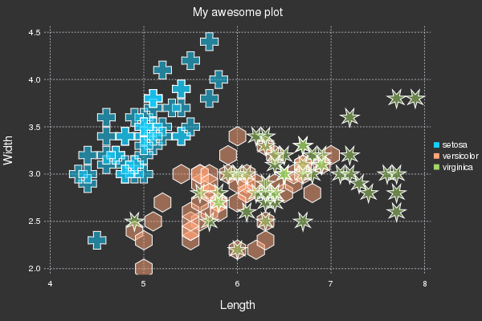

Intro to Plots in Julia
Author: Thomas Breloff (@tbreloff)
Data visualization has a complicated history, with plotting software making trade-offs between features vs simplicity, speed vs beauty, and static vs dynamic. Some make a visualization and never change it, others must make updates in real-time.
Plots is a visualization interface and toolset. It sits above other visualization "backends", connecting commands with implementation. If one backend does not support your desired features, or make the right trade-offs, just switch to another backend with one command. No need to change your code. No need to learn something new. Plots might be the last plotting package you ever learn.
My goals with the package are:
- Powerful. Do more with less. Complex visualizations become easy.
- Intuitive. Start generating plots without reading volumes of documentation. Commands should "just work".
- Concise. Less code means fewer mistakes and more efficient development/analysis.
- Flexible. Produce your favorite plots from your favorite package, but quicker and simpler.
- Consistent. Don't commit to one graphics package. Use the same code and access the strengths of all backends.
- Lightweight. Very few dependencies, since backends are loaded and initialized dynamically.
- Smart. It's not quite AGI, but Plots should figure out what you want it to do... not just what you tell it.
Use the preprocessing pipeline in Plots to fully describe your visualization before it calls the backend code. This maintains modularity and allows for efficient separation of front end code, algorithms, and backend graphics.
Tap into the extensive visualization functionality enabled by the Plots ecosystem, and easily build your own complex graphics components with recipes.
Please add wishlist items, bugs, or any other comments/questions to the issues list, and join the conversation on gitter.
Simple is Beautiful
Lorenz Attractor
# initialize the attractor n = 1500 dt = 0.02 σ, ρ, β = 10., 28., 8/3 x, y, z = 1., 1., 1. # initialize a 3D plot with 1 empty series plt = path3d(1, xlim=(-25,25), ylim=(-25,25), zlim=(0,50), xlab = "x", ylab = "y", zlab = "z", title = "Lorenz Attractor", marker = 1) # build an animated gif, saving every 10th frame @gif for i=1:n dx = σ*(y - x) ; x += dt * dx dy = x*(ρ - z) - y ; y += dt * dy dz = x*y - β*z ; z += dt * dz push!(plt, x, y, z) end every 10

Make some waves
using Plots pyplot(leg=false, ticks=nothing) x = y = linspace(-5, 5, 40) zs = zeros(0,40) @gif for i in linspace(0, 2π, 100) f(x,y) = sin(x + 10sin(i)) + cos(y) # create a plot with 3 subplots and a custom layout l = @layout [a{0.7w} b; c{0.2h}] p = plot(x, y, f, st = [:surface, :contourf], layout=l) # add a tracking line fixed_x = zeros(40) z = map(f,fixed_x,y) plot!(p[1], fixed_x, y, z, line = (:black, 5, 0.2)) vline!(p[2], [0], line = (:black, 5)) # add to and show the tracked values over time zs = vcat(zs, z') plot!(p[3], zs, alpha = 0.2, palette = cgrad(:blues).colors) end

Iris Dataset
# load a dataset using RDatasets iris = dataset("datasets", "iris"); # load the StatPlots recipes (for DataFrames) available via: # Pkg.add("StatPlots") using StatPlots # Scatter plot with some custom settings scatter(iris, :SepalLength, :SepalWidth, group=:Species, title = "My awesome plot", xlabel = "Length", ylabel = "Width", m=(0.5, [:cross :hex :star7], 12), bg=RGB(.2,.2,.2)) # save a png png("iris")
